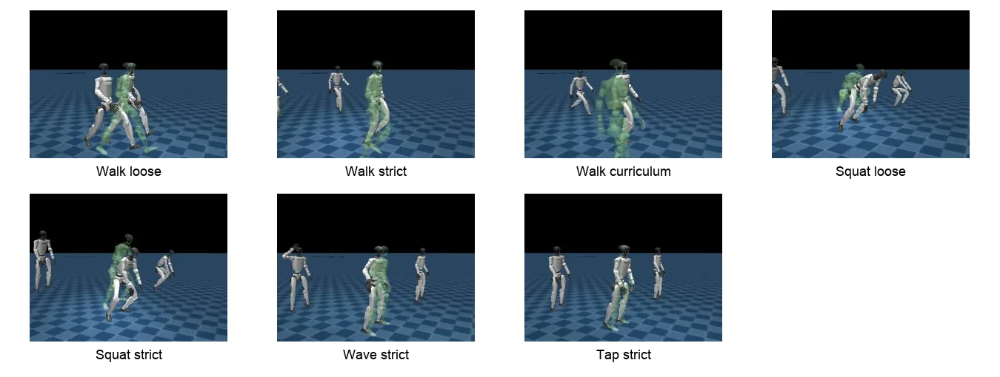
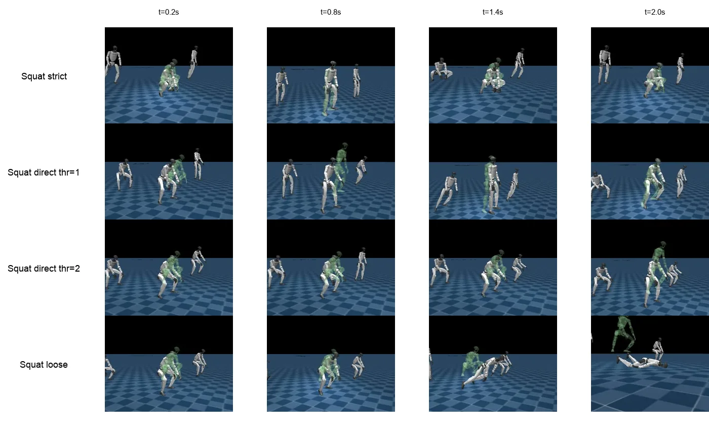
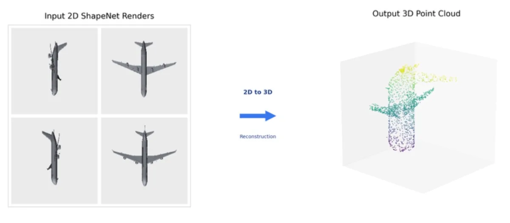
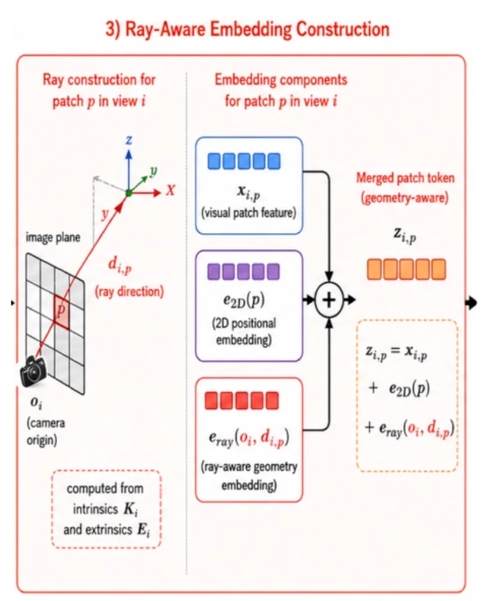

I’m a Stanford CS student working on robot learning, optimization, and the systems underneath.
At the Stanford AI Lab, I work on getting learned policies onto real robots. At Apple, I built optimization and verification tools for cellular hardware. I like understanding things all the way down, from the math to the implementation to the hardware that actually has to run it.
At Apple, I worked on a hardware resource-allocation problem that called for more than a fast algorithm: I wanted to know how good a solution could be, and how we could prove it.
I developed optimization and verification tools in Python and C++, proved the underlying problem NP-hard, and evaluated solutions across 330 workloads. They came within one unit of the certified optimum, while an independent verification workflow achieved approximately 500× faster certification in internal benchmarks.
Fig. 1 Conceptual diagram of the workflow, drawn generically. Top: every candidate solution is measured against a certified optimum. Bottom: the constraint model is checked against both the written specification and the production implementation.Case studyHide case study
Exact verification.The certification side is an exact branch-and-bound solver backed by two independent optimality checks, so every candidate solution is measured against a proven optimum rather than a best guess.
Specification versus implementation.A solver is only as correct as its constraint model, so I checked whether the hardware specifications agreed with what the production C++ actually did. I reverse-engineered the production constraint logic and built constraint-analysis tooling that identified discrepancies in 3 of the 5 constraint dimensions I modeled, along with a mutation-testing framework that detected all 16 injected faults.
Theory and tradeoffs.I proved the resource-allocation problem NP-hard and explored alternative formulations, including minimum edge cover, to characterize exact solutions and hardware-configuration tradeoffs. I also investigated repair and bound-tightening improvements. Together with performance analysis, that decided which approaches were both mathematically possible and worth implementing.
Also.Cellular control-plane firmware in C and C++, written from L1/PHY specifications. Finalist, Apple iContest intern competition, 2026.
Stanford Vision and Learning LabSep 2026 to nowLinux, GPU inference, HDF5, dual-arm YAMOngoing
Evaluating learned policies on a dual-arm robot
At Stanford, I’m working on bringing pretrained visuomotor policies onto a real dual-arm robot.
I built the observation and evaluation pipeline around the policy, integrating cameras, proprioception, and tactile sensing at 30 Hz, along with live previews, replay, and experiment recording.
The first offline experiments covered 381 prediction windows from seven teleoperated episodes. The pretrained policy underperformed simple motion baselines, which gives us a concrete starting point for improving it.
Fig. 2 Observation rate and inference latency are different numbers. Drawn to scale from the two measurements: observations every ~33 ms, and about 210 ms per plan in an earlier configuration, so several observations arrive during each plan.Case studyHide case study
Pipeline.Camera images, arm and hand proprioception, and tactile readings are synchronized into the observations the policy expects at 30 Hz. Live preview, offline replay and recording to video, HDF5 and metadata make every run inspectable and repeatable.
Pre-deployment validation.Before any command reaches the motors, a plan passes a non-actuating preview, forward and inverse kinematics checks against recorded poses, and an automated safety preflight.
Evaluation.On our data the pretrained policy does not beat simple motion baselines zero-shot. That sets the bar any adaptation, including learning from human interventions, has to clear.
Debugging.Investigated race conditions in tactile observation history, arm and hand coordinate mappings, and controller-stability failures under gravity compensation.
Status.Live observation, inference and offline evaluation work end to end. The policy has not yet run autonomously on the arms.
Fig. 3 Conceptual diagram of the pipeline. The dashed link to the arms stays closed until autonomous rollout.
Stanford CS224RWith Benji WarburtonApr to Jun 2026PPO, MuJoCo Warp, Unitree G1, Modal GPUsCompleted
From Text to Torque: feasibility-aware humanoid motion tracking
Getting a humanoid to imitate a motion is harder than generating one that looks convincing.
With Benji Warburton, I built a pipeline that turns text-generated Unitree G1 motions into reinforcement-learning tracking tasks in MuJoCo Warp. We trained PPO controllers across 1,024 parallel environments.

Fig. 4 Rendered PPO rollouts from the project. The white robot is the policy; the translucent green figure is the text-generated reference it is tracking.
Best-of-N references.For each prompt we generated several motion seeds and scored each one with cheap reference-only diagnostics before any training. Diagnostic-best seeds beat diagnostic-worst seeds in early strict-PPO probes on jump, roll and squat.
One of the most useful debugging discoveries came from the squat task. Episodes were terminating after 13.5 steps because the failure threshold was too strict. Fixing the termination criteria let training episodes reach the full 250-step horizon.
How it was fixed matters. Simply loosening the thresholds also reached 250 steps, but in that rollout the robot falls while its episode continues; with a calibrated threshold it stays on its feet. Episode length alone says little about tracking quality.
Fig. 5 Final squat training metrics from the repository’s result tables. The longer episodes did not come with lower tracking error.
Diagnostics.Root height range, root speed and acceleration, joint velocity and acceleration extremes, body angular speed and initial-state checks, combined into a clipped robust-z feasibility score. The goal was to reject bad references cheaply, not to learn a black-box predictor. Probe reward deltas, best minus worst seed: jump +0.055, roll +0.020, squat +0.227 (150 strict-PPO iterations, 256 environments).
Temporal repair.Slowing the worst references to twice their duration was mixed: a slight help on jump, mixed on roll, worse on squat. Hard references often need regeneration or adaptive training, not just slower playback.

Fig. 7 Squat rollouts at four termination settings. In the loose row the robot is on the floor by 1.4 s while the episode continues.
Stanford CS231NWith Kuba Hashemian and Leon LiuApr to Jun 2026DINO/ViT, Transformers, ShapeNetCoreCompleted
Geometry-aware positional embeddings for sparse-view 3D reconstruction
Most image models know where a patch is in an image, but not where the camera was when it saw it.
For our sparse-view 3D reconstruction project, I designed ray-aware positional embeddings that give Vision Transformer patches their camera origin and viewing direction.

Fig. 8 The task: rendered ShapeNet views in, a 2,048-point cloud out. From the project poster.
Ray-aware tokens.Each patch token gets its visual feature, its 2D position, and an embedding of its camera origin and the ray direction through that patch, computed from the camera intrinsics and extrinsics.
Controlled design.Same encoder, fusion module, decoder, data split and view protocol for every variant; the only experimental variable is the embedding. Baselines: 2D positional, view-ID and camera-pose embeddings, on about 2,000 ShapeNetCore objects split at the object level.

Fig. 9 Ray-aware token construction, from the project poster.
Working with Kuba Hashemian and Leon Liu, we compared geometric embeddings against standard positional approaches while keeping the underlying architecture fixed. On approximately 2,000 ShapeNet objects, the ray-aware approach reduced Chamfer error by 17% with one view and 22% with two. F-score improved by 29% and 27%, respectively.
Fig. 10 Chamfer error, normalized so the 2D positional baseline is 1.0 at each K (grey). Copper is the ray-aware embedding.
Fig. 12 The project poster, with Kuba Hashemian and Leon Liu. Select to view at full resolution.
Bare-metal systemsFeb to Apr 2025C, RISC-V assembly, Mango PiCompleted
A computer from the registers up, and a game that listens
I wanted to build a computer system without leaning on an operating system.
On a RISC-V MangoPi, I wrote the runtime, hardware drivers, libraries, and shell in C and assembly. That included memory allocation, graphics, interrupts, and hardware interfaces.
Then I built Space Invaders on top of it, with microphone and accelerometer controls through low-level peripheral drivers.
Fig. 13 Conceptual diagram of the stack, bottom to top. Everything above the hardware row is my code.
Independent projectSep 2026 to nowCUDA C++, Triton, NsightOngoing
CUDA and Triton kernels for visuomotor policy inference
I’m exploring how to make transformer-based robot policies run faster by working below the model level, in CUDA C++ and Triton kernels.
The focus is kernel fusion, memory traffic, and profiling with NVIDIA Nsight, with comparisons against optimized PyTorch and TensorRT implementations.
Completed first
Research
Completed, CS229, with Sandeep Sethuraman
Adaptive language tutoring as a POMDP
A tutor never sees what a student knows, only how they answer. We modeled the learner as a 20-dimensional belief state (mastery and interaction counts across 10 language skills), with the agent choosing among five exercise types. The simulator is fit by maximum likelihood to 100,000 exercises from 2,000 users in the Duolingo SLAM dataset.
Over 100 simulated learners, PPO had the best cost-adjusted reward (0.24 ± 0.18). MPC reached similar final proficiency (0.746 vs 0.744) at higher cost; LinUCB overspent; DQN converged to a cheap but ineffective policy.
Mastery over an episode, by policy. Select for the full poster.Completed, Stanford NLP Group
Syntax-aware pre-pretraining for Transformers
Flattened Universal Dependencies trees into structured training sequences to test whether a short stage of syntactic supervision, before ordinary text, makes language learning more data-efficient and how those representations transfer downstream.
Completed, Koç University
Metalinguistic reasoning across languages
Can a language model work out a grammar from a handful of examples? I built multilingual preprocessing and benchmarks for grammatical inference and morphology, curated about 300 translated and tokenized linguistics puzzles, and fine-tuned and evaluated GPT, T5 and BERT-family models.
Completed, Microsoft Turkey
Recurrent forecasting for enterprise time series
GRU and LSTM forecasters in PyTorch for financial and enterprise data, including the preprocessing and training workflow.
Ongoing, Stanford CS329H (Machine Learning from Human Preferences), Fall 2026
Learning from human interventions under changing supervisor beliefs
When a person stops correcting a robot, has the robot improved, or has the person simply started trusting it? Most learning-from-intervention methods read every takeover as evidence that the robot made a bad decision. But a supervisor’s behavior can drift while the policy stays exactly the same, and a learner that ignores this will misread the feedback.
Fig. 14 Conceptual illustration of the hypothesis, not a result. The robot’s behavior is identical in both panels; only the supervisor’s history differs. Frozen-policy probes test exactly this.
ModelI represent the supervisor’s changing belief about the robot’s competence, connect it to each intervene-or-wait decision with a binary-choice (logit) model of expected value against intervention cost, and recover the stable underlying reward by MLE and MAP estimation.
The key controlFrozen-policy probes replay matched robot behavior after different supervisor histories. If interventions change on those probes, the change came from the supervisor, not the policy.
Evaluation planTen scripted policy checkpoints, matched probes and paired seeds, compared against stationary and per-round models, including supervisors who update by a Beta–Bernoulli rule the learner does not assume. Scored on both held-out intervention prediction and reward recovery, not just on predicting fewer interventions.
StatusPre-analysis plan complete; experiments and write-up in progress.
Most recent first
Experience
2026 to now
Undergraduate ResearcherStanford Vision and Learning Lab, Stanford AI Lab
Inference, evaluation and safety infrastructure for pretrained policies on dual-arm YAM robots. Case study
2026
Hardware Technology InternApple
Combinatorial optimization in Python and C++, exact branch-and-bound certification, NP-hardness proof, verification of production constraint logic; control-plane firmware. Case study
2026
Undergraduate ResearcherStanford NLP Group, Stanford AI Lab
Syntax-aware Transformer pre-pretraining. Research
2025
Software Engineer InternNewFrame AI
A five-stage, multithreaded pipeline that breaks video ads into shots and analyzes each one for a generative AI advertising agent: scene detection, multimodal analysis, quality checks and structured export. In testing it handled 2–4 shots a minute at about $0.002 a shot. I also benchmarked 10 generation models and fine-tuned LoRA adapters across five categories.
2025
Machine Learning InternMicrosoft Turkey
GRU and LSTM time-series forecasting in PyTorch. Research
2023
AI InternOBSS Technology
Document chunking and preprocessing for language-model summarization of PDFs, text files and web pages.
2022
AI and Data Science InternDASAL Aviation
Predictive modeling on UAV telemetry; TCP tooling for engineering data.
2021 to 2022
Computer Vision InternImona Technologies
Trained and fine-tuned YOLO-based detection and tracking models for a customer-traffic analytics system used in more than 120 retail stores.
Teaching and teams
Stanford
Section LeaderCS106
Weekly Python and C++ sections, help hours and grading for courses enrolling more than 800 students; coaching students through algorithmic reasoning and debugging.
Stanford
SoftwareStanford RoboSub
Hydrophone sensing, Teensy firmware and ROS 2 components for an autonomous underwater vehicle.
Istanbul
Team CaptainFIRST Robotics Competition
Captained a 27-person team through four semi-autonomous robot builds; wrote Java control software with motion planning and vision-assisted targeting.
TreeHacks XI, team winner of the Otsuka VALUENEX Award. A Zoom companion that reads speech, gesture and sentiment in real time and adapts an AI avatar and the meeting environment to the room. Zoom API, Gemini, Groq, ElevenLabs, Luma, Node.js and WebSockets.
EE14N, with Chisa Ogaki. A Raspberry Pi 5 turret: a 2048-sample FFT picks out trumpet notes, G and B pan a stepper-driven platform, and D fires a solenoid-triggered Nerf blaster.
Current. Preference models such as Bradley–Terry, RLHF and DPO, active elicitation, bandits. Project: learning from human interventions.
EE227 · Robot Perception
Current. MiniUNet segmentation at about 0.82 validation mean IoU, TSDF fusion of RGB-D frames into a mesh, and ICP registration compared under predicted and ground-truth masks.
CS224R · Deep Reinforcement Learning
Policy gradients and PPO, model-based RL, learning from demonstrations. Project: From Text to Torque.
Regional winners, teamFIRST New York City Regional (Team 8159)
2023
Türkiye national team competitorInternational Linguistics Olympiad
2023
Honorary mentionBaltic Sea Philosophy Essay Event
Istanbul, then Stanford
About
I grew up in Istanbul and came to Stanford to study computer science.
What I like most is the point where an algorithm meets something that pushes back: a robot arm, a modem, a GPU, or a board with no operating system. I like figuring out why things don’t work, getting deep enough into the system to fix them, and seeing an idea actually run.
Outside the lab, I take photographs, play trumpet, and learn languages. Sometimes those interests overlap with engineering. I built a trumpet-controlled turret, for example.